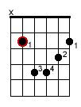
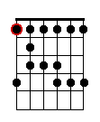

Acordul Bm
In lectia de astazi invatam alte lucruri noi. Vom introduce notiunea de acord "barre" cu acordul Si minor (Bm), vom invata restul numelor de note de pe corzile 5 si 6, vom invata un ritm de blues si un lick de final foarte popular si bineinteles cateva aplicatii in cantece cum ne-am obisnuit.
Forma Si minor (Bm)
Acum o sa invatam ce inseamna un acord "barre". Tehnica "barre" reprezinta ceea ce am invatat acum doua lectii in legatura cu acordul F. Practic este vorba despre apasarea a doua sau mai multe corzi simultan cu acelasi deget al maini stangi (de obicei aratatorul).
Forma Si minor arata astfel:

Desigur este vorba despre un acord dar o sa vedem de ce am numit-o forma mai intai. Cum se vede din diagrama degetul aratator este pus la efort barand toate primele 5 corzi, apoi va trebui sa puneti degetul inelar pe tasta 4 a corzii Re, urmat de degetul mic (il folosim si pe el pt prima oara) pe tasta 4 a corzii Sol si in fine degetul mijlociu pe tasta 3 a corzii Si. Acum ar trebui sa avem grija ca fiecare coarda ciupita sa sune clar. Daca nu suna clar corectati pozitia. Atentie coarda Mi gros nu va trebui ciupita. De asemenea este mai usor daca degetul aratator il veti roti putin astfel incat regiunea dintre el si degetul mare sa faca contact mai mare cu corzile. Mai clar o sa fie in filmulet.
Acum sa vedem de ce am denumit-o "forma". Aceasta structura poate fi mutata pe gatul chitarii si atunci acordul pe care il formeaza poarta alta denumire. Nota care da numele acordului se numeste nota de radacina (root note) si in cazul acestei forme este nota de pe coarda La. Astfel pe tasta 2 a corzii La avem un Si deci iata Si minor. Daca ne deplasam pe gatul chitarii mai la dreapta cu o tasta am obtine un Do minor, si asa mai departe. Iata un alt motiv pentru care este importanta cunoasterea pozitiilor notelor pe gatul chitarii: ele ne ajuta sa formam acorduri pe intreaga chitara. In lectiile urmatoare vom invata si alte forme care se pot misca pe gatul chitarii deci fiti pregatiti.
Gama de Blues
Poate va mai amintiti ca in lectia 3 am inceput studiul unei game de blues. Astazi revenim din nou la ea si mai invatam cate ceva.

Daca va e greu sa o memorati, observati atunci ca primul deget tot timpul va sta pe acelasi fret indiferent de coarda pe care suntem. De asemenea daca tot am invatat notele acum vom stii si cum sa denumim aceste game. Prima nota din gama de blues da si numele gamei. Astfel daca am porni aceasta forma de la tasta 5 a corzii Mi inseamna ca executam gama La blues. Daca am porni de la tasta 8 a corzii Mi inseamna ca executam gama Do blues. Trebuie repetate si aceste exercitii daca pe viitor veti dori sa executati solo-uri. Practic totul consta in alegerea de insiruiri de note din gama potrivita fiecarei melodii si ciupirea acestora. Foarte multe melodii rock sau metal au in solo-uri gama de blues chiar daca stilul muzical nu este neaparat blues.
Link-uri cu tabulaturile melodiilor cantate:
Vita de Vie - Liber
Proconsul - Cerul
Directia 5 - Am nevoie de tine
Eagles - Hotel California